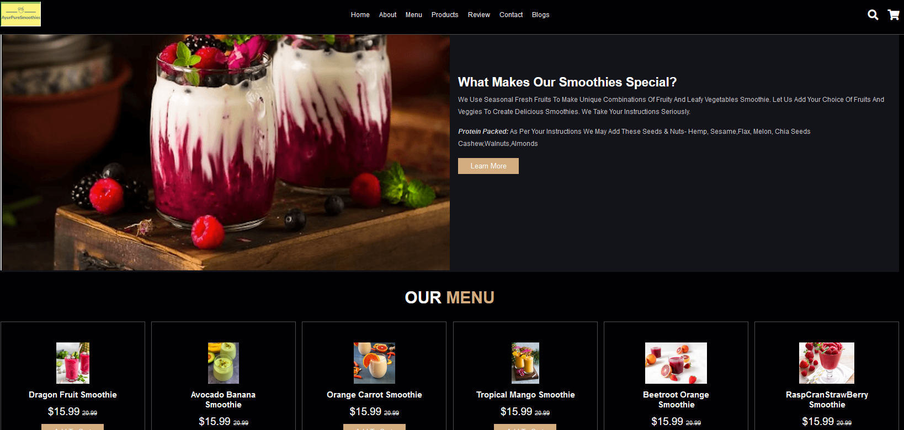
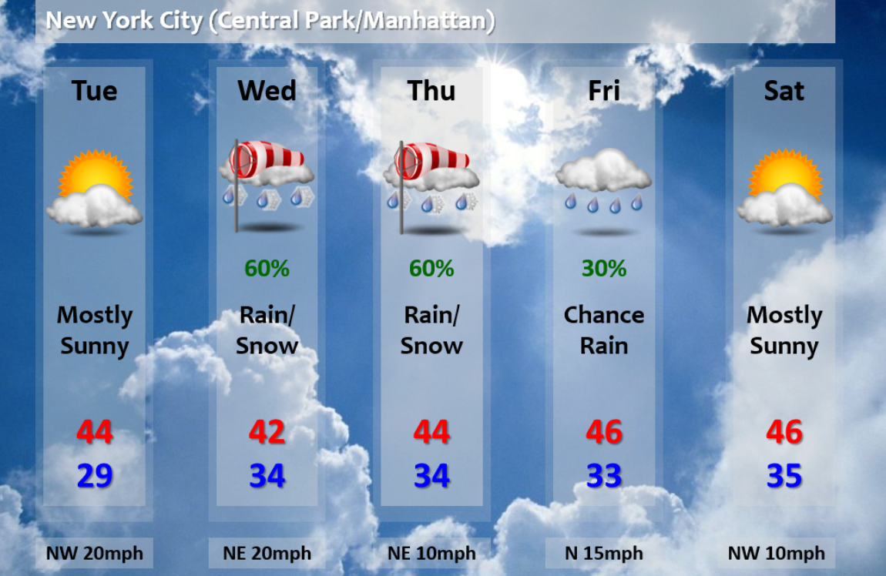

Shikha Chamoli
Data Engineer from UC Berkeley Data Analytics track, proficient in Python, SQL, Tableau, HTML, JavaScript. Experienced in data analysis, data visualization and machine learning.
EDUCATION:
UC Berkeley Data Analytics, Berkeley, CA
Data Science Certificate, August 2018
Illinois Institute of Technology, Chicago, IL
MS Computer Science, May 2017
H.N.B Garhwal University, Dehradun, Uttarakhand
BSc Mathematics,

Smoothie Shop Website
Javascript, HTML, CSS
Github Smoothie Shop WebsiteA website for a smoothie shop that sells healthy seasonal fresh fruit smoothies. User are allowed to select from a range of smoothies. It also gives a choice to select a choice of fresh fruits, vegetables, seeds and tree nuts to custom order a smoothie. Users can place their orders online by adding to the cart.

Weather Data Analysis
HTML, CSS, API
Github Jupyter NotebookPython script, JSON, OpenWeatherMapAPI to create a weather dataframe & graphs of weather information. Data is for 500+ cities around the world.I try and answer a fundamental question: “What’s the weather like as we get closer to the equator?”

Weather Sensors Reading Prediction
Predictive Modeling
GitHub Results ReportPredictive modelling in time series data- Here, I train models of the sensor readings at a central server, and the central server will contact wireless sensors infrequently, to save battery. The central server will use actual readings of the sensors when it can obtain them, and it will use its own predictions when it can't obtain the readings.
Investment Simulator
R Shiny App
Github Investment AppR Shiny app to run experiments where we draw random balls from boxes. In output we draw a frequency plot of the number of blue balls drawn.